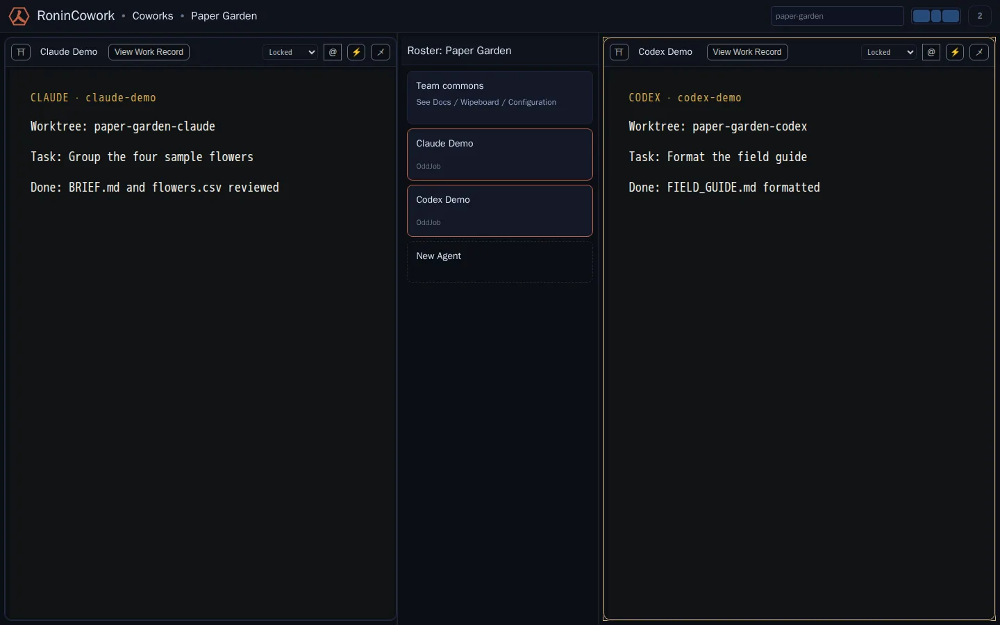

What does working in Ronin look like?
Claude and Codex, side by side.
Ronin is not another IDE for your Agents. It is a lightweight, locally run coworkspace around the Agents, accounts, tools, and documents you already use—without importing them into a proprietary platform.
The Workbench
Two Agents. Two workspaces. One place to work.

With managed file coordination and a reviewed repository arrangement, Claude and Codex can run side by side, each in its own worktree. Without that arrangement, the Workbench still places their sessions side by side; it does not invent repository isolation.
- Bring your providersRonin works around the Agent CLIs and accounts already on your machine.
- Place work deliberatelyEach numbered workspace holds one surface chosen from the discovery column.
- Keep local view stateEach workspace keeps its own tabs, scroll, and presentation choices.
How it works
The workspace is the place. The surface is what you put there.
Select a workspace, then choose a session or shared surface from the discovery column. Or drag it directly where you want it. Opening another surface replaces only that workspace. Ronin remembers the arrangement when you return.
The still proves only visible coexistence/layout and the displayed separate worktree labels. It is not cited as proof of account/reasoning boundaries, access isolation, Agent behavior, or workspace non-mutation. Independent view behavior is established by the Workbench contract.